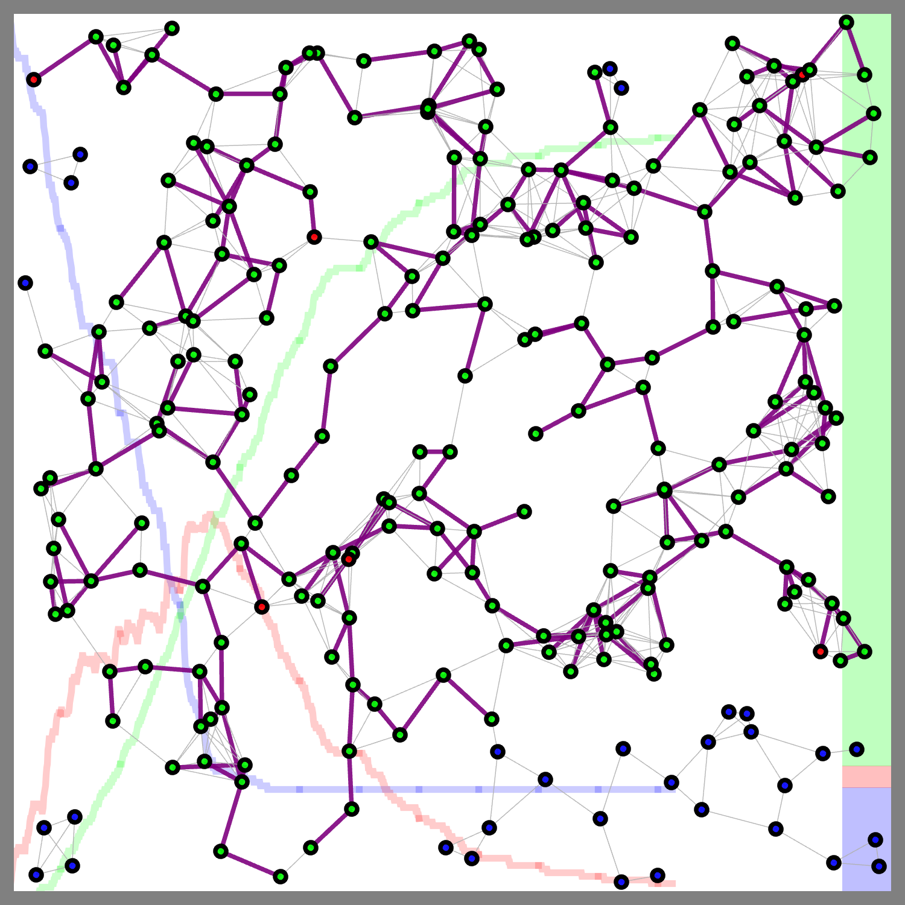
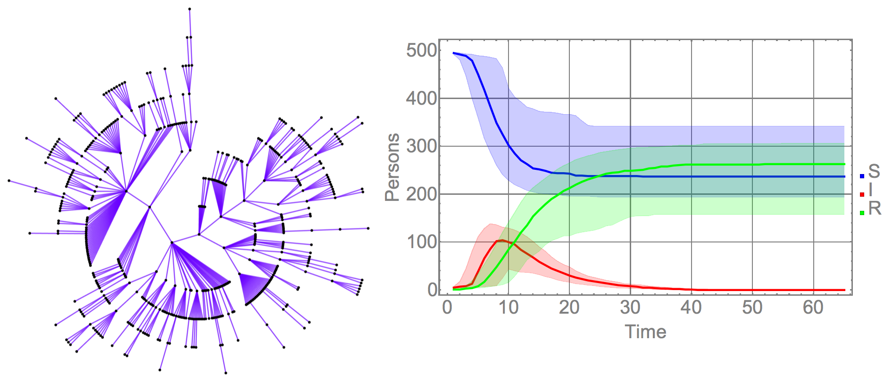
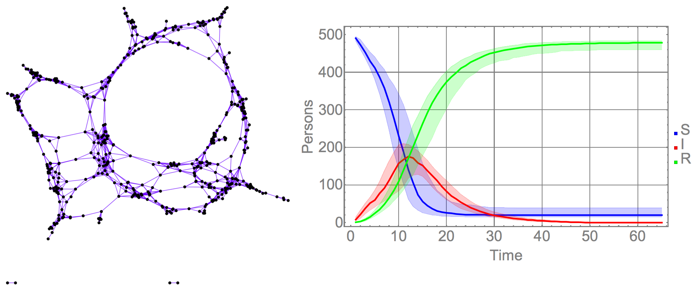
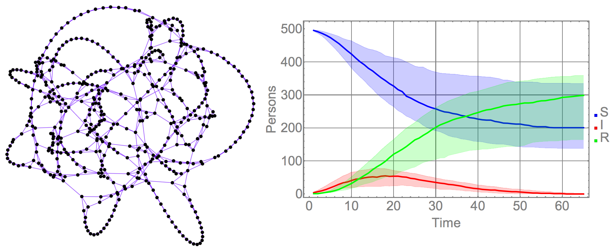

This framework is currently being coded in R, RCPP and Mathematica; and is available on our github repository (although still in a draft state). One of the advantages of our framework is that it uses the temporal Gillespie Algorithm to simulate these epidemics, which makes it extremely fast and useful in the context of stochastic simulations With this framework we can simulate several iterations of our experiments in parallel to observe the variation of our results and their sensitivity to their inputs.
Our algorithms are developed from the ideas presented in Vestergaard & Génois (2015); in a nutshell the epidemic simulations assume that each individual, or node in a graph, exists in one of some possible set of states (the state space for an individual). In the most simple scenario, a person's state may either be S (susceptible), or I (infected). We use Gillespie-style algorithms to simulate the trajectory of each person/node through state space, dependent on the local network topology. This means for example, that while the same mathematical equations apply for each node, if one susceptible node shares many connections to infected nodes, they will be much more likely to become infected. A general Gillespie-style algorithm on a network works by considering at any point in time, all the events that could occur, then sampling their waiting times until each event would occur, then "firing" the event that occurs first. In the simple case corresponding to a Markov process, these waiting times will be exponentially distributed. We are also investigating more realistic waiting time distributions, such as Weibull or Gamma distributed waiting times, which are more complex to simulate, but can better take advantage of biological and clinical data. We are also interested in simulating infection processes where the underlying network topology also changes independent of the process evolving on the network, which could correspond to quarantine, or behavioral changes as an epidemic spreads, for example.
  We have found that our algorithm is not only stable but pretty fast. This allows us to run large sets of experiments in short amounts of time. This is not only useful for our project but for other research groups interested in doing epidemic networks analysis, so we are begining to structure it as a publicly available R package.